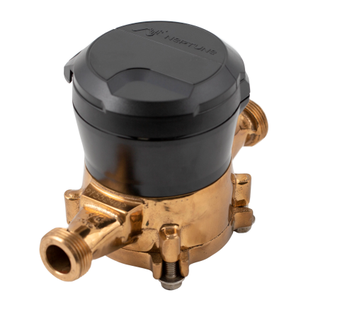

YDrip
Track your water usage and get alerts for potential leaks
The average household wastes up to 10,000 gallons of water per year, and 10% of homes experiencing leaks waste 90 gallons or more daily. It's time to take control.
Features
Detect Leaks
Get real-time alerts for any leaks in your water system, so you can take action and avoid costly damage.
Track Water Usage
Monitor your water usage and keep track of how much water you're using every day, week, and month.
Open Source
YDrip seamlessly integrates with Home Assistant, making it easy to monitor your water usage alongside other smart home devices.
Long Battery Life
The ESP32-S3 based water meter can run on battery power for months, so you don't have to worry about constantly changing batteries.
Overview
Simple Installation
YDrip attaches to your existing water meter with a secure strap and connects to your home's WiFi network. No need for a plumber - installation is quick and hassle-free. Once set up, simply use your smartphone to access water usage data and track your consumption.
Specifications
| CPU | ESP32-S3 |
|---|---|
| Memory | 64kbit FRAM |
| Connectivity | 2.4GHz WiFi |
| Battery | 3x AA (not included) |
| Measurement Accuracy | TBD |
| Battery Life | TBD |
FAQ
YDrip has been tested with 5/8 meters (shown below), but should be compatible with most mechanical brass meters. It uses sensors to measure the rotation of a metal wheel in the brass housing, which corresponds to the amount of water flowing through your pipe.
